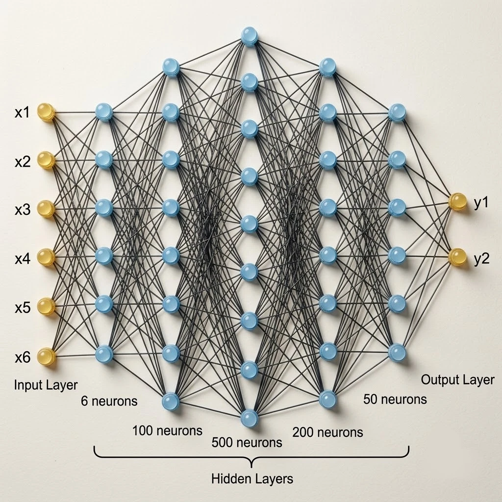

Centre de calculs et modèles d'IA
Ivanhoé Botcazou
Doctorant en intelligence artificielle au LERIA
22 Octobre 2026
Au programme
Séminaire de Dartmouth 1956
La naissance de la discipline : Intelligence Artificielle

Au second rang, de gauche à droite : Oliver Selfridge, Nathaniel Rochester, Marvin Minsky, John McCarthy.
Au premier rang : Ray Solomonoff, Peter Milner, Claude Shannon.
Photo : Nathaniel Rochester — The Minsky Family
« Quels problèmes de niveau humain un algorithme serait-il capable de résoudre ? »
- Objectif : Simuler l'intelligence humaine.
- Vision : Reconnaissance d'images.
- Langage : Génération automatique de texte.
- Modèle : Réseaux de neurones artificiels.
1. IA : modélisation - apprentissage - prédiction
Schéma guidant les modèles d'IA
Prédire un vecteur $f_\theta(x)$ dans un espace normé $(F, \|\cdot\|)$
$F = \mathbb{R}^d$, $\;f_\theta(x) \in \mathbb{R}^d$Coût : $\|y - f_\theta(x)\|_2^2$
Prédire une loi de probabilité $p_\theta(\cdot\,|\,x)$ sur l'espace des classes $(\mathcal{Y}, \mathcal{A})$
Binaire : $\mathcal{Y}=\{0,1\}$, $\;p_\theta(\cdot\,|\,x) = \sigma(f_\theta(x)) \in \Delta(\mathcal{Y})$Coût : $KL\big(\delta_y \,\|\, p_\theta(\cdot\,|\,x)\big) = -\log p_\theta(y\,|\,x)$
Ce que fait un modèle de classification

Les deux classes sont imbriquées : aucune frontière linéaire ne convient.
Ce que fait un modèle de classification

$f_\theta$ transporte les données vers un espace où un seul hyperplan sépare.
Ce que fait un modèle de classification

$\sigma$ est une fonction d'activation pour obtenir une mesure de probabilité $p_\theta(\cdot\,|\,x) \in \Delta(\mathcal{Y})$.
De l'algèbre linéaire aux réseaux de neurones

Source : astronoo.com
Interprétation matricielle d'une couche :

- Transformations affines : $W \cdot x + b$
- Fonctions d'activation non linéaires
- Changements de repère et projection géométrique
2. Ressources de calcul et de stockage
3. Cas particulier : les modèles de langues
4. Lien avec mes travaux de thèse
Merci
Questions ?